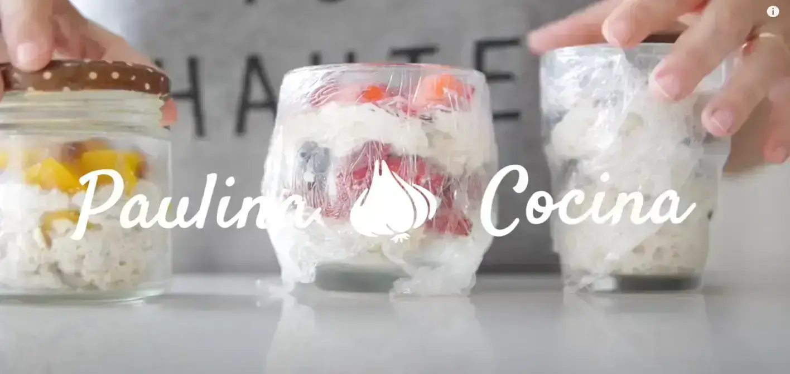
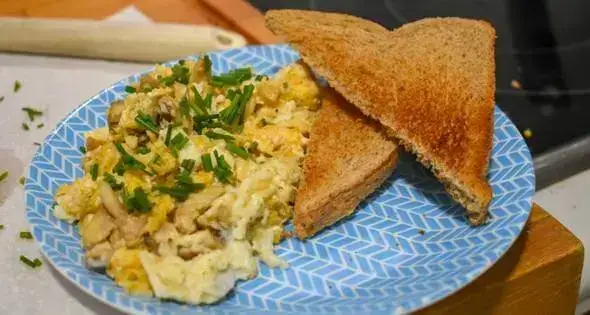

Recetas faciles y saludables!

Desayuno con avena
No queres prepararte el desayuno por que no tenes tiempo ? Dejalo preparado la noche anterior
40 minutos

Huevos revueltos
Ideal para un buen desayuno y para poner arriba de tu tostada de pan integral que ya preparaste!
15 minutos